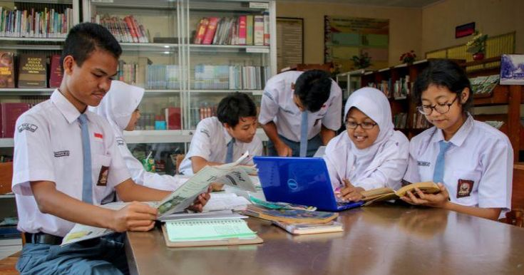
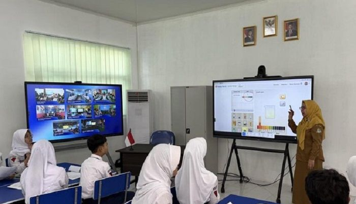

MA AL ANBAWI
Madrasah Aliyah

Madrasah Aliyah Al Anbawi melaksanakan berbagai kegiatan persiapan akademik untuk menghadapi ujian.
Kegiatan ini bertujuan meningkatkan kemampuan belajar, kedisiplinan, serta semangat siswa dalam meraih prestasi akademik.
Seluruh siswa diharapkan dapat mempersiapkan diri dengan baik, rajin belajar, dan selalu berdoa agar mendapatkan hasil terbaik.
